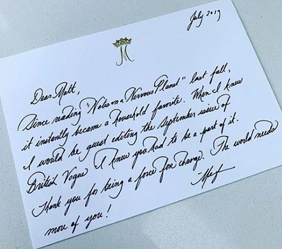
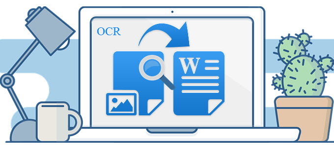
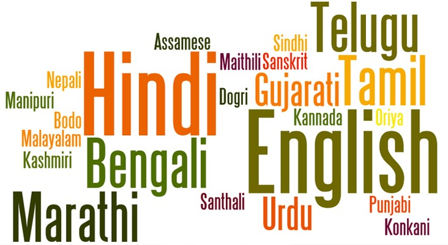

CNS lab Home
Home
Research
Publications
People
Softwares
Useful links
Contact us
Handwriting team - CNS lab
We work on problems related to handwriting
1 / 3

Understanding handwriting
2 / 3

Detection & Recognition
3 / 3

Indian languages
Recent News
First CNSL Virtual Meet 2020 held on 15-16 August 2020. Click
here
for more details
Gubbala Roshan (ee16b138) and Sai Charan (ee16b137) joined the team to do their Dual Degree Project (DDP)
Recent Tweets
Tweets by bharatiscript
Tweets by cnslabiitm
Research
Publications
People
Softwares
Useful links
Contact us